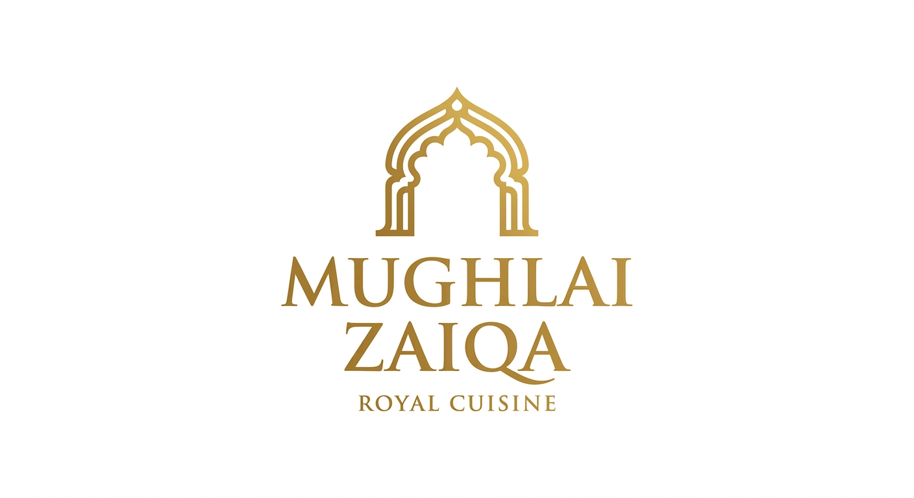
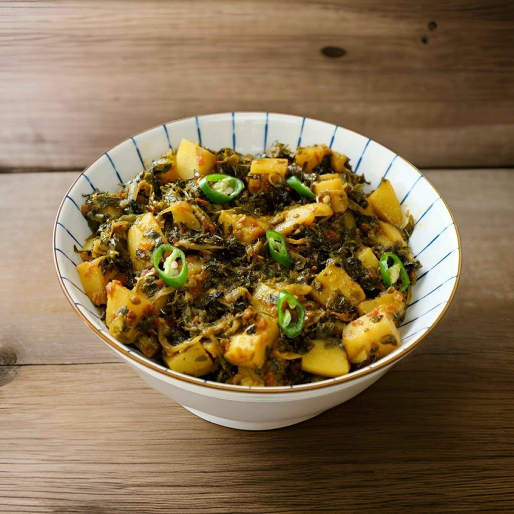

Aloo Palak
Aloo palak is a simple and nutritious vegetable curry made with potatoes and spinach. The soft potatoes blend
perfectly with the mildly spiced spinach gravy, creating a comforting and healthy dish. It is often enjoyed with
roti or rice and is loved for its light yet flavorful taste.
Go Back